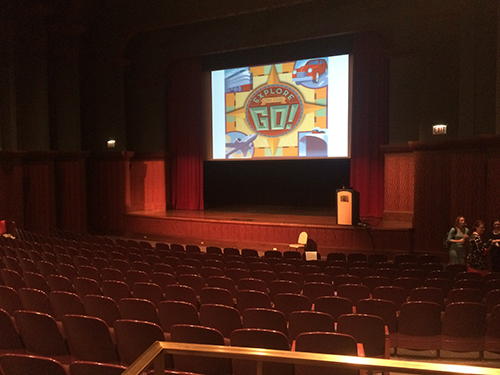
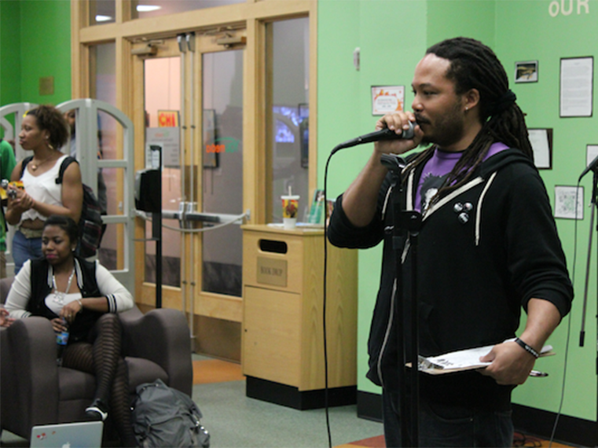

On Monday, February 22, hundreds of Chicago-area high schoolers lined up at the doors of the Harold Washington Library’s Pritzker Auditorium, waiting to be admitted to what would be, for many of them, the event of the year. It was the one-year anniversary of Open Mike, an event series cosponsored by Chancelor Bennett, better known as Chance the Rapper, and the Chicago Public Library. Named in memory of Brother Mike Hawkins, a poet who mentored many of Chicago’s recent breakout lyricists during their teenage years, Open Mike encourages young artists to come perform their work onstage, free of charge or judgment, and often in front of a crowd of hundreds.
The first-ever Open Mike was hosted one year ago at the Chicago Cultural Center, a space provided by the city’s Department of Cultural Affairs & Special Events. Hundreds of teen artists, all of whom heard about the event either through social media or word of mouth, journeyed from every zip code in Chicagoland to try to snag a seat in the 300-person auditorium. Some of the most dedicated young performers even lined up starting at 10 a.m. for the 5 p.m. show, which would be attended by Chance, Grammy-nominated songwriter King Louie, and comedian Hannibal Buress. Since then, Open Mike has continued to run every other Monday at the Pritzker Auditorium, occasionally with surprise guest speakers and performers like Kanye West and Vic Mensa.
To follow where the inspiration came from for today's Open Mike program, fans need only to venture up the stairs and down the hallway of the Harold Washington Library, to the digital youth center and talent incubator known as "YOUMedia."
Founded in 2009, YOUMedia was the first space at any Chicago Public Library to be devoted to high school teens. Since then, the program has expanded to twelve total CPL locations, aiming to provide a safe, after-school environment for teens all over the city. At its core, YOUMedia teaches students about digital media and “the maker movement,” with an emphasis on hands-on learning. Students engage in projects ranging from graphic design to photography to music to anything in between. The program uses a homemade approach dubbed “HOMAGO,” which is an acronym for “hanging out, messing around, and geeking out.”
“When teachers came to observe their students [at YOUMedia], what they saw was students who were quiet in the school day come alive in the afternoon space,” said Dr. Nichole Pinkard, associate professor at DePaul and founder of the Digital Youth Network.
When Chance the Rapper was in high school, he was one of many students who would attend YOUMedia sessions, in part because of the library’s free recording studio, one of its most popular resources. According to the Chicagoist, Chance was also a regular at the open mics put on by YOUMedia, and despite them originally being contextualized for poets, he would repeatedly come over to ask, “Hey, can we do rap over here too?” Chance would go on to record his very first mixtape, #10Day, at the YOUMedia recording studio while serving out a school suspension.
The man who set up these open mic sessions and encouraged Chance and his peers to participate, no matter what their form of verbal art may have been, was Mike Hawkins. Affectionately known as “Brother Mike” to the teachers and students of YOUMedia, Hawkins served as a mentor for many of program’s most talented individuals, including Chance. The dreadlocked poet often preached to his students, “Turn moments into movements.” On December 3, 2014, Mike Hawkins died of a heart attack at his Chicago home. He was 38 years old.

“There wasn’t a teen he couldn’t connect with,” said Jennifer Steele, YOUMedia Partnerships Coordinator and a friend of Brother Mike’s since the program’s inceptions. Hawkins was a spiritual father to a whole generation of Chicago poets and rappers that have come out of YOUMedia over the past few years, including Vic Mensa, Saba, Noname Gypsy, and Malcolm London.
In a 2015 Chicago Tribune article, London said, “Mike gave us a stage, a mic, recorded us and stepped out of the way. He is still, in my heart, the most humble person.” London went on to sing the praises of the YOUMedia program in its entirety, expressing that it saved their lives. It was the place they went when they were upset or angry, and needed to find comfort in either their friends or in their art. It was the place they went to write.
Malcolm London grew up in the West Side neighborhood of Austin, which ranks 9th among the city’s 77 community areas in terms of violent crime. Chance, Vic Mensa, and many of the other YOUMedia talents grew up on the South Side, a region notorious in the public eye for its gang affiliation and heartbreaking murder statistics. The largest demographic group that visits YOUMedia are African-American males, a group historically underserved by out-of-school programs. What Brother Mike wanted more than anything else was for teenagers like these not only to find a home outside of the classroom, but more importantly to find a passion that could take them away from the inevitable empty futures faced by many of their peers.
Weinberg sophomore Leo Wang has participated in a number of open mics here at Northwestern, often choosing to perform rap in lieu of traditional singing or poetry. He believes the artist’s space to express strength of an open mic performance stems from its disassociation with external pressures, meaning people don’t feel the need to evaluate your talent and tell you what you can or can’t do. Open mics are anwhatever emotion or story they want to without judgment.
This, in essence, is the reason that Open Mike Chicago has been so reluctant to allow press at their events over the past year. Chance the Rapper established the program to carry on Brother Mike Hawkins’ legacy, which Malcom London proclaims “was not about self-promotion.” Rather, it was about providing the space and resources to let young artists grow at their craft. At YOUMedia, this meant teaching teens to “turn moments into movements,” and then stepping away to let them turn their inspiration into art. At Open Mike Chicago, which will remain press-free for the foreseeable future, Chance hopes that it will mean the same thing.